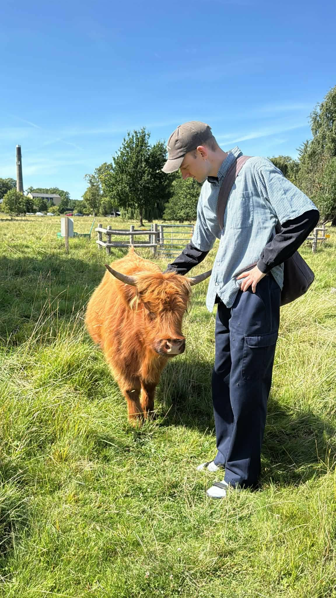

Listen while you explore.
So, who is Magnus Boie?

A tall and sweet man from the South Funen Riviera - Svendborg. 29 years old and currently in his 20th and final education. Raised in a typical nuclear family with cats, chickens and dogs. Has a close circle of good friends from near and far, whom he deeply appreciates and loves spending time with. Usually over a good meal and a cold beer - or on a rainy day; playing video games. At home, he's geeking out with modern technology, the FOSS world, basketball, music, series, or movies. Grew up on a strong cocktail of Metallica, Snoop Dogg, Warcraft, and Star Wars. Knows no limits when it comes to diving deep into all the above. When city life in Copenhagen gets too intense, he hops on a train back home to the old folks to enjoy the fresh air and beautiful nature. With lots of barking and meowing, of course. And it's never a proper trip home without his best friend - little brother Lasse, 25 - who isn't quite as tall, but just as sweet and nerdy as his brother.
CV
Relevant job experience from [2018-NOW]
- Restaurant Villette: bar and waitering. 10.2023 - 8.2024
- Bistro Je T’aime: working as a chef student. 06.2023 - 10.2023
- Café Bopa in CPH: responsible for service, administrative work, waitering, bartending 10.2019 - 11.2022 Responsible on both weekends and weekdays. Focus on optimizing service and organizing. High-pace restaurant. Administrative work such as counting, organizing, stocking up etc. Shaking up cocktails, barista-coffee etc.
- Gorilla & Retour in CPH: waitering 7.2019 - 10.2019. High-pace waitering, 'multiple servings' restaurants.
- Dr. Holms Hotel in Norway: waitering 1.2019 - 7.2019 A large hotel with many different focus points, big group arrangements and special events. Mainly waitering.
Education:
- Short-term chef's internship in Auberge du Vert Mont, Southern France.
- Half-year course in gastronomi in Valby.
- Half-year course in fine woodworking and crafts in Nørrebro.
- Gymnasium in Svendborg.